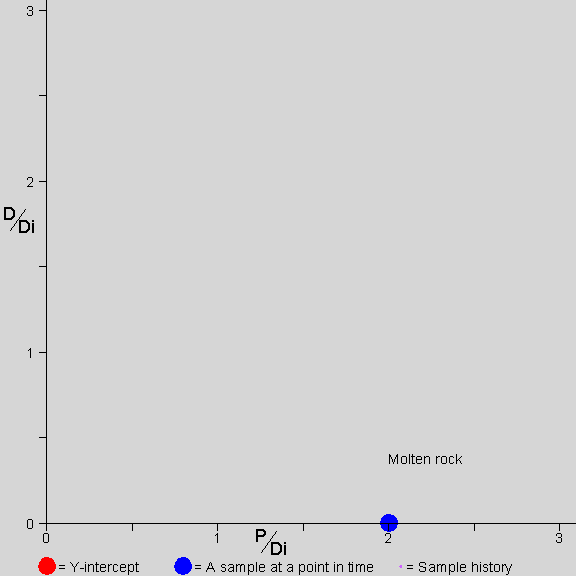

Observando o Envelhecimento de uma Rocha em um Diagrama de Isócrona
por Jon Fleming

A imagem mostra uma rocha se formando e envelhecendo, ao longo de um período de três vidas médias, como você a veria em um diagrama de isócrona. A taxa de quadros deve ser constante, mas pode não ser no seu sistema.
Durante o primeiro 1/2 de vida média, a rocha está derretida. O P decai para D, mas os átomos são móveis na rocha derretida. O P e o D se misturam uniformemente em toda a rocha. Qualquer amostra retirada da rocha tem a mesma quantidade de P e D. Como há apenas um ponto de dados no gráfico durante o tempo derretido, não há linha de isócrona (porque um ponto não define uma linha).
No final do primeiro 1/2 de vida média, a rocha solidifica. Esta rocha acontece de solidificar em três minerais que absorvem quantidades diferentes de P e D (e Di). Agora, esses três minerais são plotados como três pontos distintos e definem uma linha de isócrona. A linha que passa por eles é inicialmente horizontal, porque o processo de solidificação não distingue entre D e Di; portanto, a razão de D para Di em cada amostra é a mesma na solidificação.
Para o resto do tempo mostrado, 2,5 vidas médias, o P em cada mineral continua a decair para D. Os átomos não são móveis e permanecem onde estão. Em cada mineral, a quantidade de P diminui (assim, o ponto que representa esse mineral se move para a esquerda) e a quantidade de D aumenta na proporção da diminuição de P (assim, o ponto que representa esse mineral também se move para cima).
Observe que a interseção Y da linha de isócrona está sempre no valor de D/Di que estava presente em todas as amostras na solidificação.
O cronômetro no canto inferior esquerdo mostra a passagem do tempo. Observe que para cada inclinação da linha de isócrona, há uma quantidade única de tempo que passou desde a solidificação. Medindo a inclinação da linha de isócrona, encontramos a quantidade de tempo que passou desde a solidificação.
Mais informações podem ser encontradas na FAQ de Datação por Isócrona de Chris Stassen.